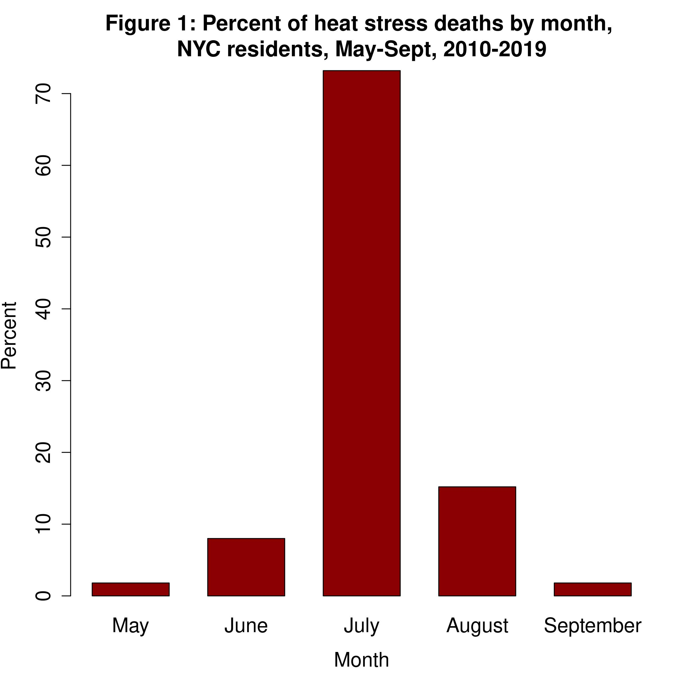
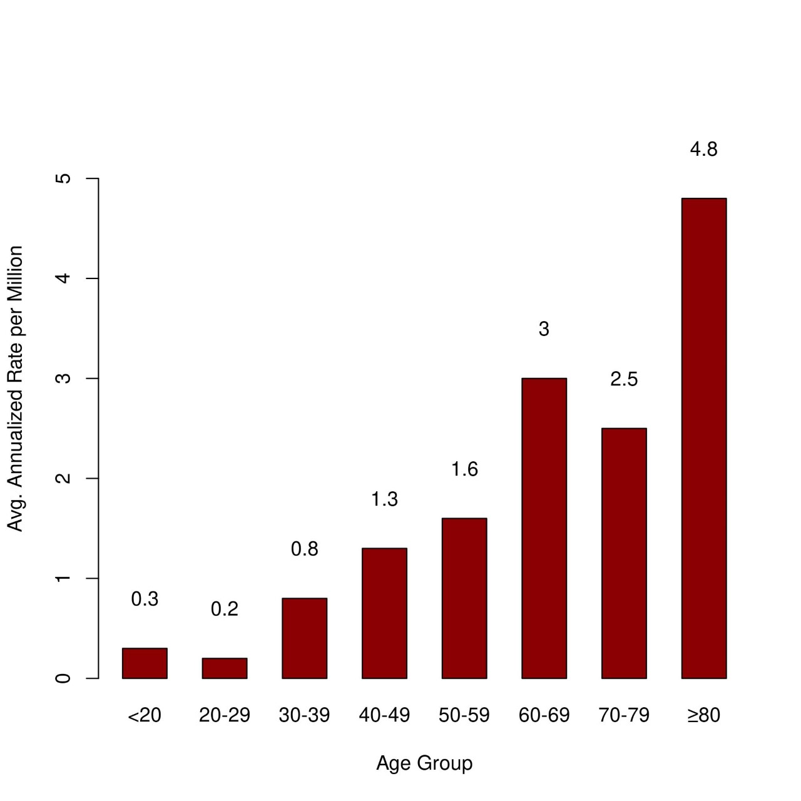
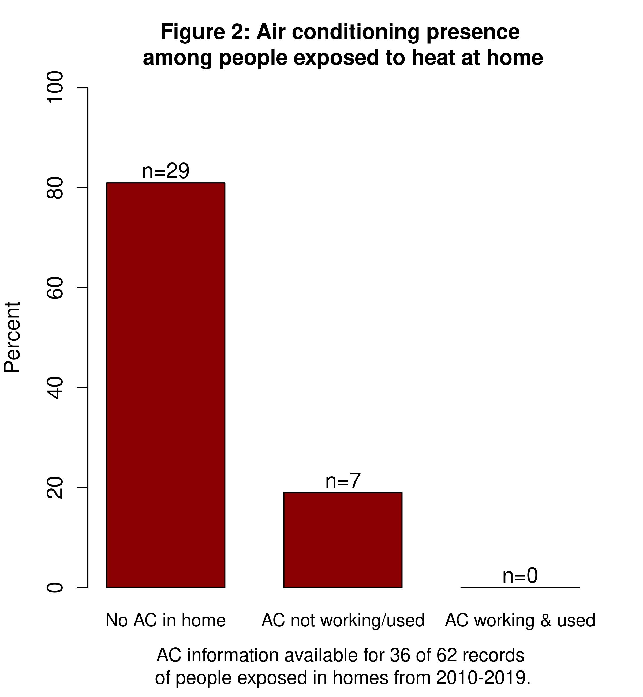
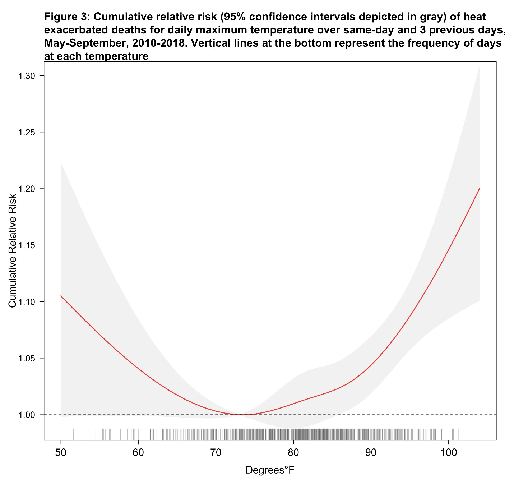
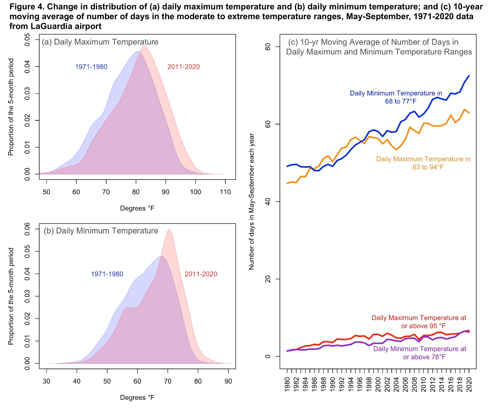

2021 NYC Heat-Related Mortality Report
Summary: Heat Stress Deaths
- Each summer from 2010-2019, there were, on average,10 heat stress deaths (those caused directly by heat) in New York City (NYC).
- Lack of home air conditioning (AC) continues to be an important risk factor for heat stress death. Among those who died from heat stress, the place of death was most often an un-air-conditioned home.
- Black New Yorkers are more likely to die from heat stress, with death rates two times higher than among other New Yorkers. This inequity is the result of past and current structural racism that creates economic, educational, health care, housing, and other systems that benefit white people, but put at a disadvantage Black, Indigenous and other people of color.
- Even though the number of heat stress deaths has decreased in recent years, the racial inequity persists.
Summary: Heat-Exacerbated Deaths and Neighborhood Impacts
- From 2010-2018, there was an average of approximately 100 heat-exacerbated deaths (those caused indirectly by heat, such as by aggravating an underlying illness) each summer associated with extreme heat events, which are defined as at least 2 consecutive days with 95°F or higher daily maximum heat index (HI) or any day with a maximum HI of 100°F or higher, the threshold used for the City’s heat advisory.
- An estimated 350 heat-exacerbated deaths were associated on average each year with hot days overall – daily maximum temperature above 82°F – or about 2% of all natural-cause deaths over summer.
- Heat-exacerbated mortality is higher in neighborhoods that are home to a greater proportion of Black New Yorkers, reflecting the impacts of structural racism at the neighborhood level. Heat-exacerbated mortality is also higher in communities with a greater proportion of people with household incomes below the federal poverty line.
- Summers are growing hotter. Although the number of days meeting the National Weather Service extreme heat threshold has stayed constant, the number of non-extreme hot days, (i.e., days with temperature below the heat advisory threshold) is increasing, contributing the most to heat-exacerbated deaths each summer and highlighting the need for heat-mitigation outside of emergency response measures.
- Emergency response to extreme heat must be coupled with equitable investments in structural interventions and heat mitigation measures to protect New Yorkers throughout the increasingly hot summer weather.
Introduction
Hot weather is dangerous to health, sometimes resulting in death.
We track heat-related deaths in three ways:
- Heat stress deaths are caused directly by heat and happen when heat-related illnesses such as heat exhaustion and hyperthermia lead to death.
- Heat-exacerbated deaths happen when heat worsens existing chronic conditions such as heart disease and diabetes. These deaths are caused indirectly by heat.
- Neighborhood impacts can be tracked by looking at community-level differences in risk of heat-related death and are described using the Health Department’s Heat Vulnerability Index (HVI).
All heat-related deaths are preventable.
Heat stress deaths
The Health Department examined heat stress deaths occurring during the months of May through September from 2010-2019. Researchers reviewed death certificates and medical examiner investigation reports in cases where heat was recognized as a cause of death. A more detailed description of methods and data sources can be found here.
Among NYC residents, there were 102 heat stress deaths during the warm season from 2010 to 2019. There were an average of 10 deaths per year, with a minimum of 0 deaths in 2014, the coolest year, and a maximum of 33 in 2011, which had one of the hottest heat waves during the time period examined. Most deaths occurred in July (73%) and August (15%) as shown in Figure 1. In 2020, there were 4 heat stress deaths, though that number is provisional and subject to change because mortality records are not finalized.
| Year | n (deaths) | % | n, extreme heat days | Maximum heat index reached, degrees F | Length of longest extreme heat event, days |
|---|---|---|---|---|---|
| 2010 | 11 | 10 | 12 | 105 | 3 |
| 2011 | 33 | 31 | 5 | 115 | 4 |
| 2012 | 8 | 8 | 9 | 106 | 3 |
| 2013 | 25 | 24 | 13 | 109 | 4 |
| 2014 | 0 | 0 | 2 | 97 | 2 |
| 2015 | 2 | 2 | 2 | 102 | 2 |
| 2016 | 4 | 4 | 16 | 112 | 7 |
| 2017 | 7 | 7 | 6 | 103 | 3 |
| 2018 | 4 | 4 | 22 | 106 | 5 |
| 2019* | 8 | 8 | 9 | 114 | 4 |
*Number of heat stress deaths for the year is provisional and subject to change because mortality records for the year are not finalized. Number will be updated in future reports.
Demographics
- Black New Yorkers continue to experience disproportionately high rates of heat stress death. Black New Yorkers had an age-adjusted death rate that was more than twice as high as that of white New Yorkers (2.3 deaths per million versus 1.0 deaths per million) from 2010 - 2019. Structural racism and an inequitable distribution of resources needed for wellness (e.g., jobs that pay a living wage, access to quality health care, and access to housing with air conditioning) are causes of racial inequities in heat-related mortality.
- Death rates were higher in neighborhoods with high percentages of residents living below the federal poverty line compared with neighborhoods with low and medium percentages of residents living below the federal poverty line.
- Approximately two thirds of deaths occurred among men.
- Heat stress deaths occurred among all age groups, with the lowest rates among people aged 20-29 and the highest among people aged 80 and older.
Sex of heat stress decedents, 2010-2019
| n | % | Avg. annualized age-adjusted rate per million | |
|---|---|---|---|
| Female | 32 | 31 | 0.6 |
| Male | 70 | 69 | 1.7 |
Race and ethnicity of heat stress decedents, 2010-2019
| n | % | Avg. annualized age-adjusted rate per million | |
|---|---|---|---|
| Non-Hispanic White | 33 | 32 | 1.0 |
| Non-Hispanic Black | 44 | 43 | 2.3 |
| Hispanic | 19 | 19 | 0.8 |
| Asian and Pacific Islander | 5 | 5 | 0.4 |
| Other/Unknown | 1 | 1 | 0.7 |
Data on people identified as two or more races or races/ethnicities not listed are included in other/unknown. The Hispanic/Latino category includes people of any race. Differences in health outcomes among racial and ethnic groups are due to long-term institutional and personal biases against people of color. Lasting racism and an inequitable distribution of resources needed for wellness cause these health inequities. These resources include jobs that pay a living wage, health care, housing with air conditioning, among others, which lead to worse health outcomes.
Neighborhood poverty level of heat stress decedents, 2010-2019
| n | % | Avg. annualized age-adjusted rate per million | |
|---|---|---|---|
| Low <10% | 18 | 18 | 0.9 |
| Medium 10 to <20% | 33 | 34 | 0.9 |
| High 20 to <30% | 32 | 33 | 1.5 |
| Very High 30% and greater | 15 | 15 | 1.2 |
| Missing/Residence unknown | 4 |
Area-based poverty groups based on neighborhood tabulation area (NTA).
Place of residence of heat stress decedents, 2010-2019
| n | % | Avg. annualized age-adjusted rate per million | |
|---|---|---|---|
| Manhattan | 19 | 19 | 1.0 |
| Bronx | 14 | 14 | 1.0 |
| Brooklyn | 36 | 36 | 1.3 |
| Queens | 24 | 24 | 1.0 |
| Staten Island | 6 | 6 | 1.1 |
| Homeless* | 3 |
*Based on residence unknown in death death certificate.
Age of heat stress decedents, 2010-2019
Health and other risk factors
Among the subset with detailed medical examiner review available more than 90% had one or more chronic conditions, with more than two-thirds showing evidence of cardiovascular disease.
Additional common conditions included substance or alcohol use, schizophrenia or schizoaffective disorder, cognitive or psychiatric conditions, and having a history of diabetes.
Of adults aged 18-64, nearly half were obese, defined as having a body mass index of 30 or above.
| n | % | |
|---|---|---|
| One or more chronic conditions | 81 | 92 |
| Evidence of cardiovascular disease | 62 | 70 |
| Evidence of alcohol or substance use | 24 | 27 |
| Evidence of schizophrenia/schizo-affective disorder, cognitive or psychiatric conditions* | 22 | 25 |
| History of diabetes | 18 | 20 |
| History of respiratory conditions | 7 | 8 |
| Cerebral palsy | 3 | 3 |
| Evidence of renal conditions | 4 | 5 |
Data source: Office of the Chief Medical Examiner data.
Heat exposure circumstances
People who died from heat stress were most often exposed to the heat in their homes (71%, n= 62 of 88 records with detailed information). Without AC, indoor temperatures can be much higher than outdoors, especially at night, and can continue for days after a heat wave.1
Among New Yorkers who died after becoming dangerously hot at home, and for whom there was information about the presence or absence of an AC, 81% had no AC and the rest had AC that was either not working or not in use.
More than a quarter (n=16, 26%) of decedents had an electric fan present and on, indicating that only using an electric fan without an AC cannot always prevent death during extreme heat for people who are at highest heat risk.
Previous Health Department studies have found that air conditioning access differs across race and class. New Yorkers who are Black and low-income New Yorkers are less likely to own or use an AC during hot weather, and cost is the main reason why.2 While more than 90% of NYC households have air conditioning, access is also lower in neighborhoods where more people are living with limited financial resources.
Heat-exacerbated deaths
Deaths from chronic conditions that are not recognized as heat-related on death certificates can be estimated using statistical models. There are more of these deaths than those from heat stress and they are called “excess deaths” or “heat-exacerbated deaths.” Unlike heat stress deaths, which can be identified and investigated, excess deaths can only be estimated as aggregate counts – not investigated individually. However, estimating heat-exacerbated deaths – or “mortality” – better captures how many people are dying of the heat.
We estimated heat-exacerbated mortality risk and number of deaths for 2010 through 2018 using weather and natural cause death data for May-September in NYC. The average natural death count was about 18,000 deaths for May through September each year. We used statistical models to compare deaths on hot days with deaths on cooler days. We estimated heat-exacerbated deaths using:
- an indicator for extreme heat event days defined by the National Weather Service’s heat advisory threshold for NYC. Based on the Health Department’s previous analysis of heat-exacerbated mortality, heat advisories are for at least 2 consecutive days with 95°F or higher daily maximum heat index (HI) or any day with a maximum HI of 100°F or higher.
- the range of hot daily maximum temperatures that includes both extreme heat event days and other hot days. We assessed risk for days ranging from the median maximum daily temperature of 82°F through the highest temperature during the period.
We included deaths occurring on the date of exposure to hot weather and over the following 3 days, because previous Health Department studies have shown that heat-related deaths can occur up to 3 days after the initial hot weather. Detailed methods used to estimate risks and attributable deaths can be found here.
From 2010 to 2018, the estimated number of heat-exacerbated deaths associated with extreme heat events was 98 (95% Confidence Interval [95CI]: 59, 133) on average each year.
Heat-exacerbated mortality risks were observed across the full range of all hot days (maximum temperature at or above 82°F) during the summer months. Risk increased with temperature, with the largest increases occurring at the highest temperatures (Figure 3).
The estimated number of heat-exacerbated deaths from May-September for all hot days was 347 (95%CI: 132, 536) on average each year. Heat-exacerbated deaths make up approximately 2% of all natural-cause deaths in the warm months.
The number of extreme heat event days each year has stayed about the same (approximately 10 days/year) in the past decade. However, the number of non-extreme hot days is increasing (e.g., 45 days with daily maximum temperature of 83-94°F for 1971-1980 vs. 63 days for 2011-2020). The daily low temperature (usually nighttime temperature) is a good measure of (UHI) the urban heat island effect, because it measures the heat retained after the sun has set. The daily low temperature is also increasing (Figure 4), highlighting the importance of in-home cooling. Cities like NYC experience a UHI effect, with hotter temperatures than surrounding suburbs and more rural areas, because they have large amounts of concrete and other building materials that trap heat.
 Community-level impacts
The HVI shows differences in community-level heat impacts during and shortly after extreme heat events. Unlike many social vulnerability indices, the HVI is validated against NYC mortality data – meaning that neighborhoods with elevated risk identified by the index are those areas with elevated heat-exacerbated deaths during extreme heat events.
While there are high risk Neighborhood Tabulation Areas (NTA; defined as an HVI score of 4 or 5) in every borough of the city, the thread connecting them all is that they have more residents who are Black or low-income. Risk factors for heat tend to overlap in these neighborhoods due to persistent structural racism, which have positioned economic, educational, healthcare, housing, and other systems to benefit white people and put at a disadvantage Black, Indigenous and other people of color. The relative heat mortality risk of each NTA can be explored here. Read more about how structural racism affects housing and public health and the history of redlining and how it impacts public health in NYC.
The best indicator of neighborhood-level heat impacts is the HVI, which shows neighborhood differences in heat-exacerbated mortality risk. The number of heat stress deaths by NTA should be interpreted with caution. The NTAs are small and the number of deaths at this level is also small and unreliable, so it is difficult to conclude whether tell differences between areas are due to random fluctuation or represent a real difference in risk.
Conclusions
Hot weather takes a large toll on the health of New Yorkers. An average of 10 New Yorkers die of heat stress and approximately 100 die due to chronic conditions that have been worsened by the heat on extreme heat event days. In addition, heat-exacerbated deaths occur on non-extreme hot summer days, which represent the vast majority of hot days in the summer. Over the entire warm season from May through April, approximately 350 New Yorkers die on average each year from natural causes exacerbated by the heat.
As climate change continues to result in warmer summers, response to rising summer temperatures and extreme heat requires long-term investment in infrastructure and social justice initiatives in communities dealing with the greatest heat impacts. To reduce heat-related deaths in NYC:
Continue to prioritize high HVI neighborhoods for heat mitigation and structural interventions, such as home cooling assistance, tree planting and greening, green infrastructure, and electric grid resilience to decrease risk. Couple these measures with housing and energy policies that help longtime neighborhood residents benefit from improvements.
Support the work of community-based organizations working to reduce the health impacts of heat and climate change in their neighborhoods, for example by organizing networks of at-risk neighborhoods and residents and checking on them and disseminating information about heat and health risks, and include them in decision-making about climate-health investments in their communities.
Continue to strengthen emergency response measures during periods of extreme heat, such as opening cooling centers and issuing heat-health warnings, prioritizing people and communities with the greatest need for these interventions.
Extend equitable access to air conditioning to people most impacted by heat, including assistance with ongoing utility costs, which is critical to realizing the benefits of equitable cooling at home both daytime and nighttime.
Learn more about what the City is doing to mitigate the effects of heat, and how the HVI guides that work, at Cool Neighborhoods NYC. More data and information about heat, climate, and health is also available at Climate and Health.